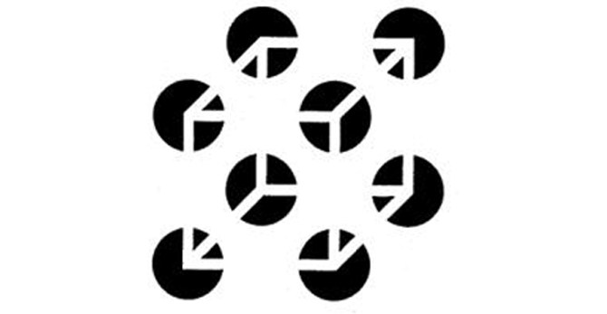
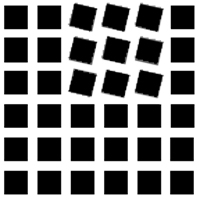
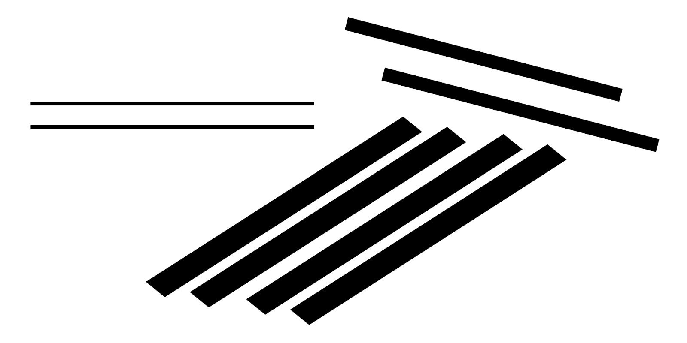
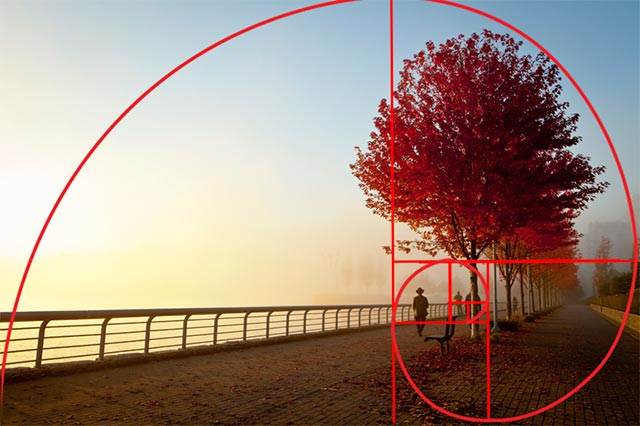
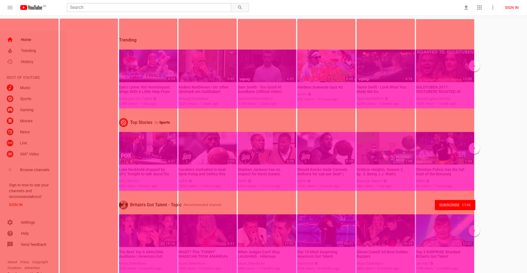
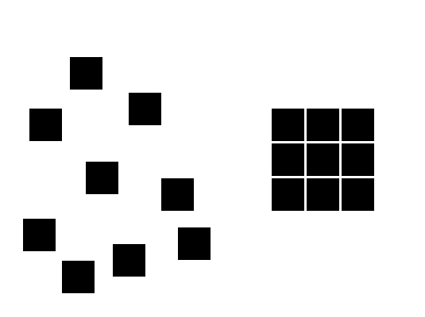
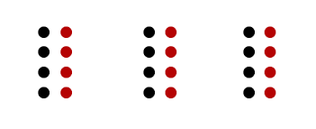
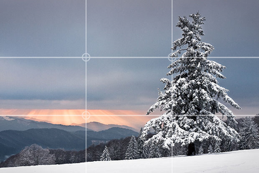
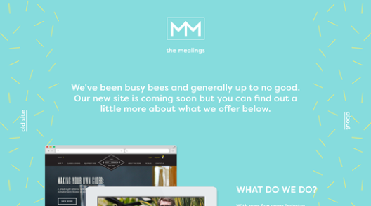
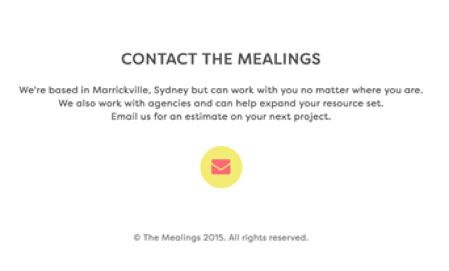

Gestaltlove
Gestalt er en psykologisk term der betyder ”samlet enhed”. Det referer til forskellige teorier om visuel opfattelse og er udviklet af tyske psykologer tilbage i 1920’erne. Disse teorier søger at beskrive hvordan folk har tendens til at organisere visuelle elementer i grupper eller forenede helheder, når designprincipperne anvendes.
Closure
Closure opstår når et objekt er ufuldstændigt eller et ”rum” ikke er helt lukket. Såfremt nok af formen er angivet, opfatter og forstår folk helheden ved selv at udfylde den manglende information

Kilde
Common fate
Common fate er udtrykket for at elementer der opfører sig på samme måde (f.eks. bevægelse eller retning) opfattes som sammenhørlige.
 Continuity
Continuity er når øjet tvinges til at bevæge sig igennem et objekt og fortsætte til et andet. Elementer der er på linje med hinanden ses som sammenhængende og bruger man de samme design elementer, holder man den røde tråd.

Figure-ground
Øjet differentierer et objekt fra det omkringliggende areal. En form, silhuet eller facon bliver naturligt opfattet som figure (forgrund), mens området omkring opfattes som ground (baggrund).
Balanceres der mellem figure og ground kan det klarificere det opfattede billede. Gøres der brug af et mere usædvanligt figure/ground forhold, kan det tilføje et mere interessant og underfundigt udtryk.
Golden section
The Golden Section kan relateres til det gyldne snit, fordi dette er opbygget af fire gyldne spiraler, der har sit udspring i hvert sit hjørne. Den gyldne spiral er i virkeligheden en matematisk formel baseret på Fibonacci-tallene, men den kan også bruges i forbindelse med opsætning af en komposition. Hvis man i en komposition benytter sig af den gyldne spiral i sin opsætning, så vil det give et behageligt og æstetisk velfungerende udtryk. Der er ingen standard for, hvordan den skal vende og dreje. Den kan vendes på hovedet eller placeres lodret alt efter, hvilken komposition den skal bruges til. I forhold til webdesign kan det siges at være en figur for vores perception af et site. Typisk vil logoet hvile den gyldne spirals udspring, og så kommer det resterende indhold. Det betyder, at som afstanden til udspringet øges, jo mindre vigtigt vil indholdet være for os som brugere.

Grids
Et grid er et usynligt gitter, der opdeler siden i forskellige sektioner, og det kan understøtte både vertikale og horisontale kolonner. Det gør siden mere overskuelig, og den fremstår ikke rodet. Et gitter er altså en form for strukturering af en hjemmeside. Hvis en hjemmeside ikke opsættes i et struktureret grid, så er der intet system for placeringen af de forskellige elementer, hvilket forringer brugervenligheden ganske meget. Det manglende system betyder, at eksempelvis overskrifter ikke har en fast placering, og desuden bliver det svært at danne et hurtigt overblik over sidens indhold. Grid er tæt knyttet til gestaltlovene om nærhed og lighed. Nærhed og grid er knyttet gennem sektioner på en hjemmeside.
Proximity
Når man bruger proximity (nærhed), placeres elementerne tæt på hinanden så de danner en helhed. Er ønsket at brugerne skal kunne forstå at tingene hører sammen, er det vigtigt ikke at placere elementerne langt fra hinanden eller at ændre formen da dette skaber forvirring. Proximity kan være svært at opnå med blot et eller to elementer, og det kan derfor være essentielt at have flere objekter at arbejde med.
 Rule of Thirds
Tredjereglen er at man deler billedet ind i 9 lige store felter ved at lade 2 vandrette og 2 lodrette streger gå ned gennem billedet. Ud af det kommer 4 skæringspunkter for stregerne, og disse 4 punkter er der hvor man ligger fokus når man ser billedet. Det kan derfor være en god ide at bruge tredjereglen til portrætter og generelt i kompositionen.
Similarity
Similarity er ligheder i et billede, tekst, hjemmeside osv. Det er med til at give den røde tråd igennem et design. Similarity kan også bruges til at hjælpe en person med at aflæse tekst, billede mm. på en bestemt måde og i en bestemt rækkefølge.

Simplicity
Simplicity, også kaldet prägnanz, består af individuelle komponenter der hver for sig ikke giver mening. Men vores hjerner sætter automatisk komponenterne sammen og får dem til at give mening. Simplicity minder om closure og similarity.
(A)symmetry
Symmetri giver ro, harmoni og overblik, hvor asymmetri, som kan virke rodet og vildt, giver mere liv og spænding i designet. Elementerne der er fundet er typisk af samme slags eller har noget til fælles.
Der findes tre former for symmetri:
- Spejlet symmetri Elementer bliver spejlet eller reflekteret rundt om en spejlingsakse.
- Rotative symmetri Ens elementer som bliver roteret, ofte ud fra et fælles punkt i centrum
- Translative symmetri Når der er 2 eller flere ens elementer, forskellige steder i kompositionen.
Whitespace
Whitespace, også kaldet negative space, er alt det der ligger bag indholdet på eksempelvis et website, en plakat etc., og er med til at skabe fokus på de essentielle elementer. Whitespace er ikke begrænset til at være en hvid farve, men kan bestå af alle farver samt baggrundsbilleder.
 Taget direkte fra dette link